원자력기사 (2021-05-15 기출문제)
1과목: 원자력기초
1. (가)와 (나)는 핵분열 과정에서 생성된 핵종이 베타(β-) 붕괴하는 과정을 나타낸 도식의 예이다. 괄호 안 Ⓐ, Ⓑ, Ⓒ에 들어갈 핵종을 순서대로 올바르게 표기한 것은?
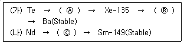
- Cs-131, I-136, Pm-148
- I-134, Cs-136, Pm-148
- Cs-135, I-135, Pm-149
- I-135, Cs-135, Pm-149
(정답률: 알수없음)

2. 원자의 질량수가 200, 밀도가 50g/cm3, 두께가 4cm인 표적을 통과한 후 중성자선의 강도가 표적을 통과하기 이전에 비하여 60% 감소한 경우, 이 표적의 거시적 단면적은?
- 0.13 cm-1
- 0.23 cm-1
- 0.33 cm-1
- 0.43 cm-1
(정답률: 알수없음)
3. 두께가 0.03cm인 Co-59표적을 1.0×1012#/cm2 · sec의 중성자속으로 2시간 동안 조사하여 Co-60을 생성하고자 한다. Co-60의 생성율은? (단, Co-59의 밀도는 8.9g/cm3, 포획단면적은 30barn이고, 아보가드로수는 6.02×1023이다.)
- 1.13 × 107#/cm2 · sec
- 9.18 × 1010#/cm2 · sec
- 8,17 × 109#/cm2 · sec
- 5.88 × 1014#/cm2 · sec
(정답률: 알수없음)
4. 가압경수로에서 제어봉은 노심 상부에서 하부로 삽입되거나 노심 하부에서 상부로 인출되는 방식으로 사용된다. 이와 같은 제어봉의 움직임에 의한 영향을 가장 적게 받는 것은?
- 버클링
- 재생계수
- 중성자 누설율
- 원자로 출력
(정답률: 알수없음)
5. 지발중성자에 대한 설명으로 틀린 것은?
- 여기상태인 핵분열생성물의 방사성붕괴과정에서 방출된다.
- 수명이 길어 원자로주기 증가에 기여한다.
- 모핵종의 반감기에 따라 주로 6개 군으로 분류된다.
- 즉발중성자에 비해 중성자감속 과정에서의 누설률이 크다.
(정답률: 알수없음)
6. 기동율(Start up rate)에 대한 설명으로 바른 것은?
- 기동율이 0이면, 원자로 안정주기는 무한대이다.
- 기동율로 배가시간을 구할 수 있다.
- 기동율의 단위는 DPM이다.
- 기동율이 3이면, 원자로 출력은 분당 30배로 증가된다.
(정답률: 알수없음)
7. 반응도를 나타내는 단위가 아닌 것은?
- dps
- cent
- △k/k
- pcm
(정답률: 알수없음)
8. 아래 제시된 원자로 정보를 사용할 때, 유효증배계수는? (여기서, τ는 페르미연령, L2th: 열중성자 확산면적, B2은 버클링, KINF은 무한증배계수이다.)
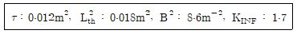
- 1.33
- 1.36
- 1.39
- 1.42
(정답률: 알수없음)
9.
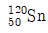
의 원자질량이 120amu일 때, 의 핵자 당 결합에너지는? (단, 양성자 질량은 1.007amu, 중성자 질량은 1.009amu, 1amu의 등가에너지는 931MeV이다.)
의 핵자 당 결합에너지는? (단, 양성자 질량은 1.007amu, 중성자 질량은 1.009amu, 1amu의 등가에너지는 931MeV이다.)- 7.30MeV
- 7.40MeV
- 7.50MeV
- 7.60MeV
(정답률: 알수없음)
10. 순수 U-235을 핵연료로 사용하는 원자로에서 유효증배계수가 1.001에서 1.008로 변하였다면, 반응도와 원자로의 상태로 올바른 것은? (단, 지발중성자 분율은 0.0065이다.)
- 0.00694, 즉발임계
- 0.00793, 즉발임계
- 0.00694, 초즉발임계
- 0.00793, 초즉발임계
(정답률: 알수없음)
11. 핵분열에 대한 설명 중 틀린 것은?
- Th-233은 중성자를 흡수한 후 핵분열성물질로 전환된다.
- U-233은 핵분열 당 생성되는 평균 중성자는 2 ~ 3개이다.
- U-238의 핵분열 시 생성되는 에너지는 약 200MeV이다.
- U-235의 핵분열 시 생성되는 에너지의 대부분은 중성자의 에너지이다.
(정답률: 알수없음)
12. 원자로 내의 한 지점에서 중성자의 수밀도가 1.0×109/cm3이고, 이 지점에서 핵분열 반응 수가 2.2×1013#/cm3 · sec일 때, 핵연료의 거시적 핵분열 단면적은 얼마인가? (단, 중성자 속력은 2,200m/sec이다.)
- 0.1 cm-1
- 0.2 cm-1
- 0.3 cm-1
- 0.4 cm-1
(정답률: 알수없음)
13. 다음 중 핵반응단면적에 대한 설명 중 틀린 것은?
- 1barn은 10-24cm2이다.
- 거시적단면적은 미시적단면적에 단위체적 당 원자핵의 수를 곱한 값이다.
- U-235의 핵분열단면적은 중성자 에너지가 특정 값 이상일 때, 0이다.
- U-238은 특정 중성자에너지 영역에서 흡수단면적이 매우 커지는 공명흡수영역을 갖는다.
(정답률: 알수없음)
14. 2MeV의 속중성자가 중수소와 충돌하여 1eV의 열중성자로 감속될 때까지 평균 충돌 횟수는?
- 10
- 20
- 30
- 40
(정답률: 알수없음)
15. 반사체가 없는 직육면체 균질로에서 노심출력의 평균값에 대한 최대값의 비율(Average to Max Ratio)은? (단, 직육면체 경계면에서 중성자속은 0으로 가정한다.)
- π/2
- π2/3
- π3/8
- π4/16
(정답률: 알수없음)
16. 핵연료가 U-235인 원자로의 증배계수가 1에서 1.002로 변경되었을 때의 반응도는? (단, U-235의 지발중성자분율은 0.0065이다.)
- 0.002dollars
- 0.2dollars
- 0.307dollars
- 30.7dollars
(정답률: 알수없음)
17. 열중성자로 외곽에 반사체를 설치했을 때, 예상되는 효과에 대한 설명으로 틀린 것은?
- 원자로 외부로 누설되는 속중성자의 수를 감소시킨다.
- 원자로의 임계크기와 임계질량을 감소시킨다.
- 원자로와 반사체 경계 부근의 열중성자 분포를 증가시킨다.
- 원자로 내 열중성자속의 평균값에 최대값의 비율을 증가시킨다.
(정답률: 알수없음)
18. 원자로의 증배계수를 크게 하기 위한 일반적인 방법이 아닌 것은?
- 노심 부 외곽에 반사체를 설치한다.
- 핵연료와 감속재를 균질하게 섞은 노심을 채택한다.
- 중성자 산란단면적이 큰 감속재를 사용한다.
- 중성자 흡수단면적이 작은 냉각재를 사용한다.
(정답률: 알수없음)
19. 열중성자로에서 핵분열생성물인 Xe-135에 대한 설명으로 틀린 것은?
- 원자로 운전 중 Xe-135은 방사붕괴와 핵분열로부터 생성된다.
- 임계붕소농도는 핵연료 온도와 Xe-135의 영향으로 주기 초에 급격히 증가하다가 서서히 감소한다.
- Xe-135의 부반응도로 인해 원자로 정지 후 일정기간 동안 원자로 재기동이 불가능할 수 있다.
- 원자로 정지 후 생성되는 Xe-135의 양은 원자로 운전 중 중성자속이 클수록 증가한다.
(정답률: 알수없음)
20. 액체금속냉각고속증식로(LMFBR)에 대한 설명으로 맞지 않는 것은?
- 핵연료 피복재로 주로 스테인리스강을 사용한다.
- 블랭킷으로 천연우라늄 또는 토륨을 사용한다.
- 중성자 감속재로 Na, Pb, Pb-Bi등을 사용한다.
- 중간열교환기를 설치하여 방사성물질에 의한 오염을 방지한다.
(정답률: 알수없음)
2과목: 핵재료공학 및 핵연료관리
21. 사용 후 핵연료 중간저장시설의 설계 기본요건으로 적합하지 않은 것은?
- 사용 후 핵연료를 안전하게 회수할 수 있도록 설계하여야 한다.
- 설계 및 건설은 실증된 공학적 적용사례에 기초하여야 한다.
- 예상운전과도 시에도 주변환경으로 유출되는 방사성물질이 기준치 이하로 유지되어야 한다.
- 가능한 한 능동형 설비를 이용하여 설계하여야 한다.
(정답률: 알수없음)
22. 경수로 및 중수로에서 삼중수소 생성원인에 대한 설명 중 틀린 것은?
- 경수로에서 삼중수소는 우라늄의 삼중 핵분열로 생성될 수 있다.
- 중수로에서 삼중수소는 pH 조절제인 KOH의 중성자 흡수로 생성될 수 있다.
- 경수로에서 삼중수소는 B4C 제어봉의 중성자 흡수로 생성될 수 있다.
- 중수로에서 삼중수소는 냉각재의 방사화로 생성될 수 있다.
(정답률: 알수없음)
23. Sr-90의 붕괴사슬(90Sr → 90Y → 90Zr)에서 초기에 Sr-90(붕괴상수 : 2.7×10-6/h)만 존재했다면, 90Y(붕괴상수 : 1.1×10-2/h)의 방사능이 최대가 되는 시간은?
- 약 800 시간 후
- 약 1,600 시간 후
- 약 2,400 시간 후
- 약 3,200 시간 후
(정답률: 알수없음)
24. 사용 후 핵연료 재처리에 대한 설명 중 틀린 것은?
- 재처리 공정을 통해 핵분열성 물질을 회수할 수 있다.
- 중성자를 흡수하는 방사성 핵분열생성물을 생성하는 공정을 통해 핵연료를 재이용하는 기술이다.
- 건식 재처리공정은 일반적으로 U과 Pu을 동시에 회수하므로 핵비확산 측면에서 장점을 가진다.
- 습식 재처리공정은 기술성이 입증되어 오랜 운전경험을 가짐에 따라 대부분의 처리시설이 채택되고 있다.
(정답률: 알수없음)
25. 원자력발전소에서 발생하는 방사화 생성물에 대한 설명 중 틀린 것은?
- 냉각재의 방사화로 인한 N-16은 짧은 반감기로 인해 원자로 정지 후 신속하게 소멸된다.
- 핵연료 자체의 방사화로 인한 방사능은 핵분열생성물의 방사능에 비해 매우 크다.
- 핵연료 자체의 방사화로 인한 생성물은 장수명의 악티나이드를 포함하기 때문에 고준위방사성폐기물 처분에서 중요하다.
- 냉각수 자체의 방사화는 피할 수 없지만, 함유된 불순물의 방사화는 수질관리를 통해 감소시킬 수 있다.
(정답률: 알수없음)
26. 원자력발전소 1차 계통 냉각재에 주입하는 물질에 대한 설명 중 틀린 것은?
- 원자로 반응도를 제어하기 위해 붕산 주입
- pH를 낮추기 위하여 수산화리튬 주입
- 신연료 장전의 높은 잉여반응도를 낮추기 위해 붕산 주입
- 핵분열성 핵종인 U-235의 함량 감소 시 붕산 주입
(정답률: 알수없음)
27. 가압경수로 화학체적제어계통의 기능에 대한 설명 중 틀린 것은?
- RCS 붕산 농도 제어
- 원자로냉각재 총량 조정
- 재료의 산화억제를 위한 수소 제거
- 크러드(CRUD) 등 방사성 불순물 제거
(정답률: 알수없음)
28. 경수로 원전의 선행 핵연료주기에 대한 순서로 올바르게 나열된 것은?
- 채광 → 정련 → 변환 → 농축 → 재변환 → 가공
- 채광 → 정련 → 재변환 → 농축 → 변환 → 가공
- 채광 → 변환 → 농축 → 재변환 → 정련 → 가공
- 채광 → 재변환 → 농축 → 변환 → 정련 → 가공
(정답률: 알수없음)
29. 핵연료 건전성에 영향을 미치는 요인 중 외부적 원인에 의한 결함이 아닌 것은?
- 연료봉 접촉
- 부식
- 취급손상
- 펠렛 – 피복재 상호작용(PCI)
(정답률: 알수없음)
30.
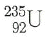
가 붕괴하여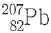
가 될 때까지, 알파 및 베타 붕괴 횟수가 맞는 것은?- 알파붕괴 : 5회, 베타붕괴 : 0회
- 알파붕괴 : 6회, 베타붕괴 : 2회
- 알파붕괴 : 7회, 베타붕괴 : 4회
- 알파붕괴 : 8회, 베타붕괴 : 6회
(정답률: 알수없음)
31. 사용 후 핵연료에 포함된 Pu-239는 15년이 지나면 원래 양의 0.043%가 감소한다. Pu-239의 반감기는?
- 약 14,174년
- 약 17,174년
- 약 21,174년
- 약 24,174년
(정답률: 알수없음)
32. 의료용 방사성동위원소의 활용 분야에 대한 설명 중 틀린 것은?
- I-131 : 갑상선 기능 질환 치료
- Na-24 : 순환계 전해질 연구
- F-19 : 양전자단층활영(PET)에서 양전자 방출제
- Xe-133 : 폐포 가스 교환 기능 검사
(정답률: 알수없음)
33. 금속 핵연료에 비해 UO2 세라믹 핵연료가 가진 장점이 아닌 것은?
- 높은 녹는점
- 높은 열전도도
- 우수한 화학적 안정성
- 냉각수와 낮은 반응성
(정답률: 알수없음)
34. 가압경수로형 원전의 핵연료 피복재가 가져야 할 성질이 아닌 것은?
- 열중성자에 대한 큰 충돌단면적
- 냉각재에 대한 우수한 내부식성
- 우수한 중성자조사 저항성
- 높은 열전도도
(정답률: 알수없음)
35. 가압경수로형 원전에서 핵분열생성물이 핵연료 및 피복재에 미치는 영향이 아닌 것은?
- 열중성자에 대한 큰 충돌단면적
- 냉각재에 대한 우수한 내부식성
- 우수한 중성자조사 저항성
- 높은 열전도도
(정답률: 알수없음)
36. 원자력발전소에서 발생되는 액체방사성폐기물의 처리방법 중 적절하지 않은 것은?
- 이온교환법
- 응집침전법
- 냉각응축법
- 증발농축법
(정답률: 알수없음)
37. 원자력발전소 내 사용 후 핵연료 습식저장조에 대한 설계 및 운영 요건 중 틀린 것은?
- 붕소 없이 미임계 상태를 유지할 수 있어야 한다.
- 저장조의 물이 일정온도 이하로 유지되어야 한다.
- 핵연료집합체가 일정 깊이 이상의 물에 잠겨있어야 한다.
- 저장조 물의 용존산소가 일정농도 이하로 유지되어야 한다.
(정답률: 알수없음)
38. 우라늄 농축공정에서 최종 감손우라늄(tail)의 농축도가 0.1%일 때, 농축한 우라늄 1kg을 얻기 위해서 필요한 천연 우라늄의 최소 질량은? (단, 천연 우라늄의 U-235의 농축도는 0.711%이다.)
- 약 6kg
- 약 8kg
- 약 10kg
- 약 12kg
(정답률: 알수없음)
39. 경구섭취에 대한 연간섭취한도가 6,000,000Bq인 Co-60의 배수 중의 배출관리기준은 얼마인가? (단, 연간 물섭취량은 730L이다.)
- 50Bq/L
- 100Bq/L
- 200Bq/L
- 400Bq/L
(정답률: 알수없음)
40. 핵연료 농축방법 중 우라늄 농축 분리계수가 큰 것에서 작은 순서대로 올바르게 나열된 것은?
- 원심분리법 → 레이저농축법 → 기체확산법
- 원심분리법 → 기체확산법 → 레이저농축법
- 레이저농축법 → 원심분리법 → 기체확산법
- 레이저농축법 → 기체확산법 → 원심분리법
(정답률: 알수없음)
3과목: 발전로계통공학
41. 내경이 일정한 관 속을 평균유속 4m/s로 물이 흐르고 있다. 마찰계수가 0.015이며 관의 길이 10m 사이의 압력강하가 약 6.122일 때, 관의 내경은?
- 10cm
- 15cm
- 20cm
- 25cm
(정답률: 알수없음)
42. 단열되지 않은 무한히 긴 증기관의 표면으로부터 자연대류에 의하여 단위길이 당 1000W/m의 열이 반지름 방향으로 전달될 때 증기관 표면온도는? (단, 관의 외경은 20cm, 주변 온도는 20℃, 증기관 표면으로부터 공기로의 자연대류열전달 계수는 15W/m2 · K이다.)
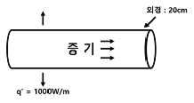
- 126℃
- 136℃
- 146℃
- 156℃
(정답률: 알수없음)
43. 어떤 유체의 유동이 아래와 같이 만족할 때, 이로부터 알 수 있는 것은? 
(단, p는 압력, ρ는 밀도, V는 유속, g는 중력가속도, h는 높이이다.)
- 비정상 상태의 비압축성 유동으로 마찰손실이 발생한다.
- 비정상 상태의 압축성 유동으로 마찰손실이 발생한다.
- 정상 상태의 비압축성 유동으로 마찰손실이 없다.
- 정상 상태의 압축성 유동으로 마찰손실이 없다.
(정답률: 알수없음)
44. 다음 핵연료 배치로부터 레이놀즈 수를 구하기 위한 등가직경은? (단, 핵연료 중심간 거리는 2cm이며, 핵연료 지름은 1.2cm이다.)
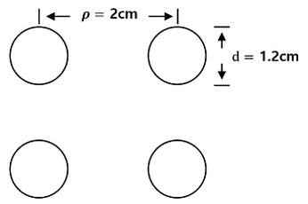
- 2.573cm
- 3.044cm
- 3.706cm
- 4.118cm
(정답률: 알수없음)
45. 다음 가압경수로형 원전의 발전소 제어계통과 제어기기가 잘못 연결된 것은?
- 원자로제어계통 : 제어봉 위치
- 주급수제어계통 : 급수제어밸브, 주급수펌프 속도
- 가압기압력제어계통 : 가압기 히터 및 살수
- 증기우회제어계통 : 주증기격리밸브, 증기우회제어밸브
(정답률: 알수없음)
46. 원자력발전소 설비에서 정상상태로 유체가 흐를 때 일어나는 엔탈피의 변화에 대한 설명으로 맞지 않는 것은?
- 증기발생기에서 운동에너지를 무시하면 엔탈피는 열전달에 의하여 감소된다.
- 주급수펌프에서 펌프 자체의 일에 의하여 엔탈피는 증가된다.
- 터빈 노즐 내에서 증기 속도에 의한 운동에너지의 변화 때문에 엔탈피는 변화한다.
- 유체가 밸브를 통과할 때, 압력강하가 생기지만 엔탈피의 변화는 없다.
(정답률: 알수없음)
47. 가압경수로형 원전과 같이 원자로냉각재가 아래에서 위로 흐르는 연료봉의 출력이 cosine 형태를 지닐 때, 핵연료 피복재 표면온도가 최고인 지점은?
- 연료봉 아래로부터 약 1/4지점
- 연료봉 중간지점
- 연료봉 아래로부터 약 3/4지점
- 연료봉 출구지점
(정답률: 알수없음)
48. 무한히 긴 원통형 핵연료피복재의 반경(r) 방향 정상상태 온도분포(T)형태로 적절한 식은? (단, A, B, C는 임의의 상수이다.)
- T(r)=Ar2+C
- T(r)=A ln(r)+C
- T(r)=A cos (Br)+
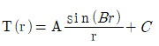
(정답률: 알수없음)
49. 가압경수로형 원전의 냉각재 특성으로 알맞지 않은 것은?
- 핵분열과정에서 생성된 열을 증기발생기를 거쳐 2차 계통에 전달한다.
- 원자로심 밖으로의 중성자 손실을 감소하는 감속재의 역할을 한다.
- 핵분열 생성물의 방출을 차단하는 역할을 한다.
- 중성자 흡수 물질인 붕산의 운반체 역할을 한다.
(정답률: 알수없음)
50. 가압경수로형 원전의 공학적 안전설비 작동신호의 목적이 잘못 기술된 것은?
- 안전주입작동신호 : 핵연료피복재 보호
- 주제어실비상환기작동신호 : 원자로건물 내 방사능 물질 외부 누출 방지
- 주증기격리신호 : 원자로냉각재계통 과냉 방지
- 보조급수작동신호 : 1차측 열 제거원 확보
(정답률: 알수없음)
51. 펌프 설계에 사용되는 유효흡입수두(NPSH)에 대한 설명으로 맞지 않는 것은?
- NPSH는 펌프 입구 유체의 압력이 높을수록 커진다.
- NPSH는 펌프 입구 유체의 온도가 높을수록 커진다.
- NPSH가 클수록 펌프 내 공동현상이 일어날 확률이 작다.
- NPSH는 펌프의 위치를 결정할 때 필수로 고려해야 한다.
(정답률: 알수없음)
52. 대기압에서 물 수조의 바닥면을 가열할 때 발생하는 풀 비등(Pool Boiling)에 대한 설명으로 틀린 것은?
- 가열면에서 비등이 발생하지 않을 때는 자연대류에 의해 열이 전달된다.
- 핵비등 영역에서는 기포가 생성되면서 열전달이 매우 효율적으로 일어난다.
- 임계열유속(CHF)은 천이비등영역에서 막비등으로 전환되는 지점의 열유속이다.
- 막비등 영역에서 열전달은 증기막을 통한 전도, 대류, 복사 등에 의해 이루어진다.
(정답률: 알수없음)
53. 가압경수로형 원전의 원자로 열 설계에 대한 설명으로 맞지 않는 것은?
- 핵연료 최고온도는 용융점보다 낮아야 한다.
- 연료봉 표면에서 기포가 발생하지 않아야 한다.
- 핵비등이탈률(DNBR)은 정해진 값보다 크게 해야 한다.
- 원자로 내에서 수력학적 불안전성이 발생하지 않아야 한다.
(정답률: 알수없음)
54. 가압경수로형 원전의 원자로압력용기 및 내부구조물에 대한 설명으로 틀린 것은?
- 원자로압력용기는 핵분열생성물의 유출을 방지하는 방호벽으로의 안전기능을 수행한다.
- 원자로압력용기 감시시편은 노심지지통에 설치된다.
- 유량분배환은 노심 내로 유입되는 유량을 균일하게 분배하도록 한다.
- 상부안내구조물 집합체는 핵연료집합체를 눌러주어 사고 시에 핵연료집합체가 들리지 않도록 한다.
(정답률: 알수없음)
55. 가압경수로형 원전에서 냉각재 상실사고(LOCA) 시 비상노심냉각계통의 성능기준에 대한 설명으로 틀린 것은?
- 최소 핵비등이탈률은 1 이상이어야 한다.
- 첨두 피복재 온도 제한치는 1,204℃이다.
- 노심형상의 변화는 노심이 냉각상태를 유지할 수 있어야 한다.
- 국부최대피복재 산화도는 피복재 두께의 17% 이내이다.
(정답률: 알수없음)
56. 내경이 20cm에서 30cm로 확장되는 원형 배관 내부를 물이 흐르고 있을 때 확장 전후 유속에 대한 설명으로 맞는 것은?
- 확장 후 유속은 1.5배 증가한다.
- 확장 후 유속은 1.5배 감소한다.
- 확장 후 유속은 2.25배 증가한다.
- 확장 후 유속은 2.25배 감소한다.
(정답률: 알수없음)
57. 가압경수로형 원전의 원자로 격납건물 살수계통(Containment Spray System)의 기능이 아닌 것은?
- 사고 시 원자로격납건물 내의 압력상승 제한
- 사고 시 원자로격납건물 내의 열 제거
- 사고 시 원자로격납건물 대기 중의 수소 제거
- 사고 시 원자로격납건물 대기 중의 핵분열생성물 제거
(정답률: 알수없음)
58. 원자력발전소의 열효율에 대한 설명으로 맞지 않는 것은? (단, 증기발생기에 전달되는 열에너지, 터빈에서 일로 전환되는 에너지, 복수기에서 제거되는 열에너지, 펌프에서 전달되어 온 일은 각각 Qs, WT, QC, WP이다.)
- 이상적인 랭킨 사이클에서 열효율은 WT-WP이다.
- 실제 랭킨사이클에서 터빈의 효율이 100%보다 작으므로 복수기에서 제거되는 열은 이상적인 랭킨 사이클에 비해 증가한다.
- 복수기 내 증기압을 감소시키는 것은 복수기 내의 증기의 온도를 낮추어 열효율을 높이기 위함이다.
- 실제 랭킨 사이클에서는 터빈의 효율(ηT-WP/ηt·QS)을 고려하여 열효율은 이다.
(정답률: 알수없음)
59. 다음이 설명하는 핵연료봉 손상 원인은?
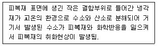
- PCCI
- 1차 수소화
- 2차 수소화
- 피복재의 평탄(Flattening)
(정답률: 알수없음)
60. 가압경수로형 원전의 원자로보호게통(RPS) 작동 신호에 대한 설명으로 틀린 것은?
- 저핵비등 이탈률 신호는 특정 허용연료 설계제한치 초과를 방지하여 비등위기 발생을 사전에 방지한다.
- 가압기 저압작동 신호는 핵비등이탈률이 안전제한치에 도달하는 것을 방지한다.
- 고 중성자속 작동 신호는 제어봉 인출사고 등 급격한 정반응도 삽입 시 노심을 보호하고 사고를 완화한다.
- 증기발생기 저압력 신호는 증기의 과다한 습분동반으로부터 터빈을 보호한다.
(정답률: 알수없음)
4과목: 원자로 안전과 운전
61. 노심 핵연료에서 발생되는 도플러 효과에 대한 설명 중 틀린 것은?
- 핵연료 내부 U-238의 열외중성자 공명흡수 변화량에 의해 발생되는 효과이다.
- 핵연료의 온도가 증가하면 공명흡수가 발생되는 중성자에너지 범위가 증가한다.
- 핵연료의 온도가 증가하면 공명흡수되는 열외중성자의 총량은 감소한다.
- 도플러 효과는 원자로 고유안전성 유지를 위해 필요한 요소이다.
(정답률: 알수없음)
62. 가압경수로형 원자력발전소의 최초 핵연료 장전 시 중성자 선원을 장전하는 가장 큰 이유는?
- 운전 초기 핵분열 유도
- 노심 반응도 변화 감시
- 축방향 중성자속 분포 측정
- 반경방향 첨두 출력 억제
(정답률: 알수없음)
63. 원자로 노심에서 핵비등이탈률(DNBR)을 감소시키는 요인이 아닌 것은?
- 냉각재 압력의 감소
- 냉각재 유량 감소
- 냉각재 온도의 상승
- 국부 열속 감소
(정답률: 알수없음)
64. 가압경수로형 원자력발전소에서 원자로 기동 시 원자로냉각재에 주입하는 약품인 하이드라진(N2H2)의 사용목적은?
- 원자로 냉각재 내 용존산소 제거
- 원자로 냉각재 내 부식생성물 저감
- 원자로 냉각재 내 비이온성 방사성물질 제거
- 원자로 냉각재 pH 조절
(정답률: 알수없음)
65. 가압경수로형 원자력발전소의 노심 반응도 제어와 관련된 설명 중 틀린 것은?
- 일정기간 동안 정격출력 운전을 지속하기 위해 잉여반응도를 가지도록 핵연료가 장전된다.
- 잉여반응도는 핵연료 연소, 핵분열생성물 축적 등에 의해 감소한다.
- 노심의 반응도를 제어하는 수단으로는 수용성 독물질, 가연성 독물질, 제어봉 등이 사용된다.
- 제어봉이 삽입/인출 되는 경우 노심 내 국부 출력변화를 유발하지 않는다.
(정답률: 알수없음)
66. 원자로 냉각재의 붕소농도 제어로 원자로 출력을 100%에서 50%로 감소시키고자 한다. 필요한 붕소농도 변화량으로 맞는 것은? (단, Xe등의 독물질 변화량은 고려하지 않는다.)
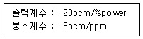
- -125ppm
- 125ppm
- -250ppm
- 250ppm
(정답률: 알수없음)
67. 가압경수로형 원자력발전소에서 가압열충격으로부터 원자로압력용기를 보호할 수 있는 방법이 아닌 것은?
- 원자로냉각재게통의 압력을 감소시킨다.
- 원자로용기의 중성자 조사량을 최소화한다.
- 사고 시 원자로냉각재계통의 열을 신속히 제거하기 위해 증기발생기를 이용한 급속냉각을 수행한다.
- 증기 및 급수를 적정유량으로 제어한다.
(정답률: 알수없음)
68. 가압경수로형 원자력발전소의 안전설비 설계요건 중 다음 설명에 해당하지 않는 것은?
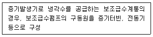
- 다중성
- 다양성
- 독립성
- 안전정지
(정답률: 알수없음)
69. 국제원자력사건등급(International Nuclear Event Scale, INES)에 대한 설명 중 틀린 것은?
- 원자력시설에서 사건이 발생한 경우 대중에게 이의 심각성을 신속하게 전달하기 위해 사용된다.
- 0등급에서 7등급까지 8단계로 분류되며 등급이 올라갈수록 사건의 심각도가 높아진다.
- 0등급은 경미한 고장, 1 ~ 3등급은 고장, 4 ~ 7등급은 사고로 분류된다.
- 체르노빌, TMI 및 후쿠시마 원전사고의 경우, 대규모 방사성물질 방출이 발생되어 7등급에 해당한다.
(정답률: 알수없음)
70. 가압경수로형 원자력발전소에서 원자로냉각재상실사고(LOCA)의 대표적인 증상이 아닌 것은?
- 원자로 건물 온도, 압력 상승
- 원자로냉각재계통 압력 감소
- 원자로건물 방사능 준위 증가
- 원자로냉각재계통 과냉각여유도 증가
(정답률: 알수없음)
71. 가압경수로형 원자력발전소에서 발생 가능한 사고의 발생빈도 및 주민에 영향을 주는 방사능 준위의 정도에 따라 사고 분류를 하는데, 다음 중 Condition III에 해당하지 않는 사고는?
- 증기발생기 튜브 파열
- 중요하지 않은 증기배관 상실
- 원자로냉각재 강제 순환 유량의 완전상실
- 전출력 운전 시 제어봉 제어군 인출
(정답률: 알수없음)
72. 가압경수로형 원자력발전소에서 수평방향 중성자속 분포에 영향을 미치는 인자는?
- 출력
- 제논
- 제어봉
- 연료연소
(정답률: 알수없음)
73. 정지여유도(SDM)에 관한 설명으로 틀린 것은?
- 원자로 정지 시 독물질인 제논에 대한 영향을 고려하지 않는다.
- 원자로가 임계상태로부터 가장 큰 제어봉 제어값을 갖는 제어봉 인출 고착된 상태에서 모든 제어봉이 삽입될 경우 순간적으로 부가되어야 하는 반응도의 양이다.
- 정지여유도 점검 시 가장 최근의 B-10 동위원소 비 측정값을 적용해야 한다.
- 출력운전 중이던 원자로가 정지하면 정지 여유도는 증가 후 감소한다.
(정답률: 알수없음)
74. 심층방어 이행수단으로 해당되지 않는 것은?
- 안전성 평가 및 심층방어 유효성 평가
- 사고관리계획서(AMP) 관리
- 소내외 방사선 비상계획
- 확률론적 안전성 평가 및 개선
(정답률: 알수없음)
75. 중대사고 진행과정 중 노외사고의 진행 현상으로 틀린 것은?
- 노외 냉각수와 용융물의 반응(FCI)
- 수소 연소
- 노심 용융물과 콘크리트의 반응(MCCI)
- 원자로 압력용기의 파손(Reactor Vessel Failure)
(정답률: 알수없음)
76. 가압경수로형 원자력발전소에서 출력운전 중 제어봉 삽입한계 이상 유지하는 목적으로 틀린 것은? (문제 오류로 실제 시험에서는 3, 4번이 정답처리 되었습니다. 여기서는 3번을 누르면 정답 처리 됩니다.)
- 제어봉 이탈사고 시 삽입되는 정반응도 제한
- 정지여유도 유지
- 목표값 이내로 축방향 중성자속 분포 유지
- 중성자속 분포를 고르게하여 출력분포를 제한치 내로 유지
(정답률: 알수없음)
77. 가압경수로형 원자력발전소 노심초기(BOC)에서 노심말기(EOC)로 진행되면서 나타나는 노심 반응도 변화로 맞는 것은?
- 연료연소에 따라 제어봉 값은 점점 감소한다.
- 감속재 온도계수는 점점 큰 부의 값을 갖는다.
- 전출력계수는 점점 정(+)의 값에 가까워진다.
- 도플러계수는 점점 작은 부(-)의 값을 갖는다.
(정답률: 알수없음)
78. 원자로 냉각재 상실사고(LOCA) 후 격납건물 내 수소생성 원인이 아닌 것은?
- 냉각재 내 용존수소
- 피복재 손상 시 지르코늄과 물과의 반응
- 가압기 수위 상실 시 상부 기포영역의 기체
- 냉각재의 방사성 분해
(정답률: 알수없음)
79. 열출력이 300MWth인 원자로에 부(-)반응도를 삽입하여 30초 후 열출력이 200MWth로 감소되었다. 원자로 주기 및 부(-)반응도 삽입 3분 후 원자로 열출력으로 맞는 것은? (단, ln2/3 = -0.4이다.)
- 12초 주기로 감소, 3분 후 2.72MWth
- 75초 주기로 감소, 3분 후 27.2MWth
- 12초 주기로 감소, 3분 후 27.2MWth
- 75초 주기로 감소, 3분 후 2.72MWth
(정답률: 알수없음)
80. 다중고장사고, 극한재해 또는 중대사고 시 사고관리를 통한 원자력발전소의 제한구역 경계에서의 예상 방사선 피폭선량(유효 선량) 목표값은?
- 250mSv 이하
- 500mSv 이하
- 750mSv 이하
- 1000mSv 이하
(정답률: 알수없음)
5과목: 방사선이용 및 보건물리
81. I-131을 섭취한 직후 갑상선에서의 선량률이 0.5mSv/h이다. 예탁유효선량은 얼마인가? (단, I-131의 물리적 반감기는 8일이고, 생물학적 반감기는 180일이다.)
- 96mSv
- 133mSv
- 192mSv
- 266mSv
(정답률: 알수없음)
82. Nal(Tl) 검출기로 1000Bq의 교정용 Cs-137 선원을 100초 동안 측정한 결과 5,350Counts이다. 선원을 제거한 후 100초 동안 백그라운드를 측정하여 100counts를 얻었다면, 교정용 Cs-137선원의 계수효율은? (단, Cs-137에서 방출되는 감마선의 에너지는 0.662MeV이고 감마선 방출비는 85%이다.)
- 3.7%
- 4.3%
- 5%
- 6.2%
(정답률: 알수없음)
83. 다음 중 방사선장해에 영향을 미치는 인자에 대한 설명으로 틀린 것은?
- 방사선의 생물학적 영향은 온도에 의한 영향을 받을 수 있다.
- 어린이가 성인에 비해 방사선에 민감한 이유는 어린이의 세포분열 활동이 성인보다 왕성하기 때문이다.
- 생물학적 효과비(RBE)는 일반적으로 고에너지 양성자가 알파선보다 크다.
- 구경꾼효과란, 무리의 세포 중에서 특정한 세포에 선량을 부여한 경우 인근의 피폭하지 않은 세포에서도 영향이 나타나는 현상을 말한다.
(정답률: 알수없음)
84. 인체에서 방사선에 의한 생물학적 영향의 발생단계 중 시간이 가장 짧은 것은?
- 물리적 단계
- 물리 화학적 단계
- 화학적 단계
- 생물학적 단계
(정답률: 알수없음)
85. 다음 설명 중 틀린 것은?
- DNA는 사다리 모양의 꼬여진 이중나선 구조이다.
- 베르고니-트리본드 법칙이란, 세포의 방사선 감수성이 세포의 증식활동에 비례하며, 세포의 분화정도에 반비례한다는 이론이다.
- 방사선에 의한 생물학적 영향의 발생단계에서 생물학적 단계는 유리기와 산화제가 염색체를 이루는 분자를 파괴하는 단계이다.
- 아주 작은 흡수에너지에도 큰 생물학적 효과가 초래 가능한 것은 손상받은 세포물질의 분열로 인해 장해가 크게 확대되어 나가기 때문이다.
(정답률: 알수없음)
86. 방사선량이나 오염정도에 대하여 그 원인규명 등 필요한 방호조치가 필요할 때, 적용되는 준위는?
- 기록준위
- 조치준위
- 개입준위
- 감시준위
(정답률: 알수없음)
87. 다음 중 틀린 것은?
- 흡수선량은 커마에서 2차 광자 및 δ-Ray가 가지고 나가는 에너지를 제외한 양이다.
- ICRP103에서 권고하고 있는 종사자의 유전적영향에 대한 명목위험계수(10-2Sv-1)는 0.1이다.
- ICRP103에서 권고하고 있는 기존피폭에 대한 참고준위의 선량값은 1 ~ 20mSv이다.
- 동일한 방사선장에서 선량당량지수와 실용량은 차이가 발생하지 않는다.
(정답률: 알수없음)
88. 축적인자(Build-Up factor)에 영향을 미치는 인자에 대한 설명 중 틀린 것은?
- 선원의 크기가 증가할수록 감마선과 차폐체의 기하학적 인자가 증가되어 축적인자는 증가한다.
- 차폐체의 두꼐가 증가할수록 감마선과 차폐체의 상호작용 확률이 증가되어 축적인자는 증가한다.
- 차폐체의 밀도가 증가할수록 감마선과 차폐체의 상호작용 확률이 증가되어 축적인자는 증가한다.
- 감마선의 에너지가 증가할수록 감마선과 차폐체의 상호작용 확률이 증가되어 축적인자는 증가한다.
(정답률: 알수없음)
89. 다음 설명 중 틀린 것은?
- HPGe 계측기는 보관 시 상온에서 냉각하지 않아도 된다.
- 다중파고분석기의 채널수를 크게하면 분해시간이 길어진다.
- 보상형 GM계수관은 고에너지 광자의 반응도를 보정한 검출기를 말한다.
- 섬광물질 중 Lil(Eu)은 Li-6을 농축한 리튬을 사용하여 열중성자 측정에 이용된다.
(정답률: 알수없음)
90. 다음 중 2π 비례계수관에서 보정하여야 하는 인자가 아닌 것은?
- 기하학적 효율
- 후방산란 보정인자
- 선원의 자기흡수와 산란의 보정인자
- 계수관의 창과 공기에 의한 흡수보정인자
(정답률: 알수없음)
91. 연구용 원자로에 안정동위원소를 넣어 반감기가 5.3년인 방사성동위원소를 제조할 때 방사능이 포화방사능의 90%에 이르는데 걸리는 시간은?
- 2.6년
- 5.3년
- 12.4년
- 17.6년
(정답률: 알수없음)
92. 다음 중 반도체 검출기 효율의 정의에 대한 설명으로 옳은 것은?
- 3΄΄ × 3΄΄ Nal(Tl) 검출기로부터 25cm 거리에서 Co-60의 1.17MeV 방사선에 대한 계측효율의 상대효율
- 3΄΄ × 3΄΄ Nal(Tl) 검출기로부터 25cm 거리에서 Co-60의 1.33MeV 방사선에 대한 계측효율의 상대효율
- 3΄΄ × 3΄΄ Nal(Tl) 검출기로부터 50cm 거리에서 Co-60의 1.17MeV 방사선에 대한 계측효율의 상대효율
- 3΄΄ × 3΄΄ Nal(Tl) 검출기로부터 50cm 거리에서 Co-60의 1.33MeV 방사선에 대한 계측효율의 상대효율
(정답률: 알수없음)
93. 다음 중 기체봉입형 검출기의 출력펄스 크기에 영향을 미치는 인자가 아닌 것은?
- 인가전압
- 방사선량
- 검출기의 음극물질
- 봉입기체의 종류와 밀도
(정답률: 알수없음)
94. 다음 중 방사선 감수성에 가장 큰 영향을 주는 요인은?
- 세포의 재생률
- 세포의 크기
- 세포의 질량
- 세포의 강도
(정답률: 알수없음)
95. 0.8DAC의 Cs-137로 오염된 작업장에서 주당 10시간, 연간 30주를 작업한 방사선작업종사자의 연간 유효선량은?
- 1.2mSv
- 2.4mSv
- 3.6mSv
- 4.8mSv
(정답률: 알수없음)
96. 다음 설명 중 틀린 것은?
- 오제전자의 방출은 대체로 원자번호가 낮은 원자에서 발생하며 전형적인 에너지의 크기는 수 MeV 정도이다.
- 주어진 물체가 여러 방사성핵종을 혼합하여 포함하고 있다면 총 방사능은 단순히 각 핵종 방사능의 합이다.
- 불안정한 정도가 큰 핵은 빨리 변환하므로 붕괴상수가 크며 반면 비교적 안정한 핵종은 붕괴상수가 매우 작다.
- 베타선의 연속스펙트럼 모양은 주로 페르미(Fermi) 함수에 따라 결정되고 형태함수 및 스크린 수정함수가 약간 보정한다.
(정답률: 알수없음)
97. I-131은 붕괴 당 0.364MeV 감마선 80%와 0.638MeV 감마선 8%를 방출한다. 37MBq의 I-131 점선원으로부터 2cm 거리에서의 에너지 플루언스율(MeV/cm · sec)은?
- 1.25 × 104
- 2.5 × 105
- 6.75 × 105
- 1.5 × 106
(정답률: 알수없음)
98. 다음 TL 물질 중 30keV 광자에 대한 조직 반응도가 가장 큰 것은?
- LiF
- Li2B4O7
- CaSO4
- MgB4O7
(정답률: 알수없음)
99. 어떤 GM계수관의 불감시간이 300μs이다. 불감시간으로 인한 계수손실이 참계수율의 6%가 elh는 시료의 방사능은 약 얼마인가? 단, 계수기의 전 계수효율은 25%이다.
- 850Bq
- 900Bq
- 950Bq
- 1000Bq
(정답률: 알수없음)
100. 다음 비례계수관에 대한 설명 중 올바르게 짝지어진 것은?
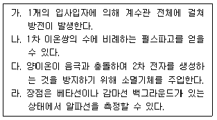
- 가, 나
- 가, 다
- 나, 다
- 나, 라
(정답률: 알수없음)